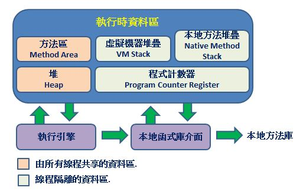
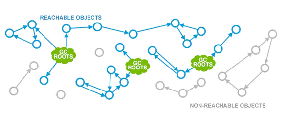
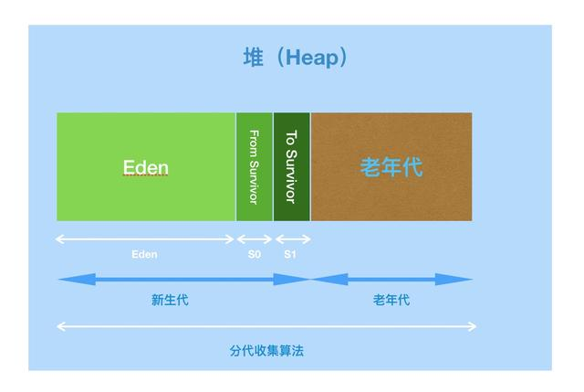
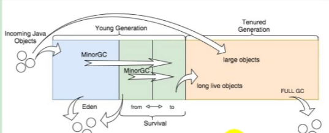
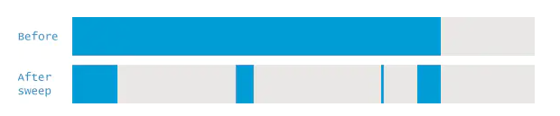
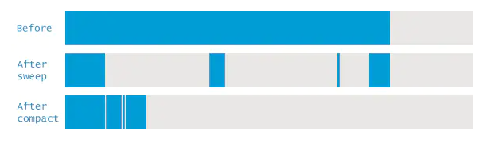

JVM模型與GC策略
GarbageCollection算法與性能優化相關
JVM記憶體模型

GC
Garbage Collection 垃圾回收是影響程式效能的重中之重
誰是垃圾?

- Reachability Analysis 可達性分析: 把所有引用的物件看成一棵樹，從樹的根結點 GC Roots 出發，持續遍歷找出所有連接的樹枝物件，能連到的就是"可達"的存活物件
- 沒有任何引用相連的就是垃圾
- 在Java中GC Roots包括:
- 虛擬機棧中引用的物件
- 方法區中類靜態屬性實體引用的物件
- 方法區中常量引用的物件
- 本地方法棧中JNI引用的物件
引用的擴充
自 JDK 1.2 以後，Java 對引用的概念進行了擴充
- String Reference 強引用：類似 “
Object obj = new Object()” 屬於強引用，只有引用還在，垃圾收集器永遠不會回收掉被引用對象 - Soft Reference 軟引用：用來描述一些還有用但不是必須的物件。對於軟引用相關的物件，在系統將要發生 OOM（記憶體溢出）時，將會把軟引用對象列進回收範圍並進行二次回收。如果這次回收後還是沒有足夠記憶體才會拋出 OOM 異常
- Weak Reference 弱引用：也是用來描述非必須物件，但它的強度比軟引用更弱，被弱引用的對象只會生存到下一次垃圾回收之前。當進行 GC 時，無論當前記憶體是否足夠，都會回收掉弱引用的物件
- Phantom Reference 虛引用：又稱幽靈引用或幻影引用，最弱的引用關係。無法通過虛引用獲取物件的實例，為物件設置虛引用唯一的目的就是能在該物件被垃圾收集器回收時收到一個系統通知
清理機制
GC發生在堆HEAP上

- 新物件創在Eden區，放不下就MinorGC小清理
- MinorGC小清理把Eden區中能搬的搬到隔壁Survivor倖存者區
- Eden區清了還是放不下，就對倖存者區也MinorGC，嘗試放到倖存者區
- 每次MinorGC倖存者區中的物件就變老，待在倖存者區太久超過域值，就趕去老年區養老
- 倖存者區還是放不下，表示是個大物件，嘗試放在老年區
- 老年區還是放不下，執行大掃除FullGC，來個大風吹
- 還是放不下，報OOM(OutOfMemory Error)錯誤

算法
-
GC的算法各有優劣，實際上是綜合使用
-
我都是把記憶體想像成冰箱的製冰盒，每盤上有一格一格那樣
標記清除（Mark-Sweep）
- 最簡單直觀，標誰清誰，缺點是會留下空間碎片

複製（Copying）
- 需要額外一個製冰盒，整理的時候把有用的搬到新家，剩的垃圾整盤丟掉，缺點是空間利用率低

標記整理（Mark-Compact）
在同一盤上把垃圾清掉，有用的搬動，壓縮整理成緊實的一區，缺點是效率低，適合用在老年區

上次修改於 2022-01-26